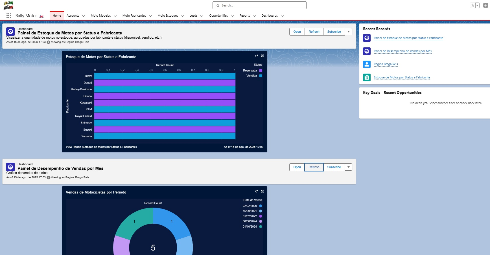

🏍️ Projeto Rally Motos
Slogan: Acelere para Novas Aventuras
O Projeto Rally Motos é uma solução desenvolvida na plataforma Salesforce para gerenciar uma concessionária de motocicletas. A proposta é proporcionar controle eficiente de estoque, relacionamento com clientes e automação de processos internos.
Funcionalidades
- Cadastro de fabricantes e modelos de motos com especificações detalhadas
- Registro de compradores utilizando o objeto padrão Account
- Envio automático de e-mails ao registrar uma venda
- Fluxos personalizados para registrar e acompanhar o ciclo de venda
- Integração com pós-venda (sem suporte técnico, mas com rastreabilidade)
- Interface amigável para colaboradores acompanharem desde o cadastro até a entrega da moto
Tecnologias utilizadas
- Salesforce Platform
- Custom Objects
- Validation Rules
- Process Builder e Flow Builder
- Apex (Triggers, Classes, Testes Unitários)
- Lightning App Builder
- Email Templates
- Salesforce CRM padrão (Account)
- Trailhead (aprendizado e prototipação)
